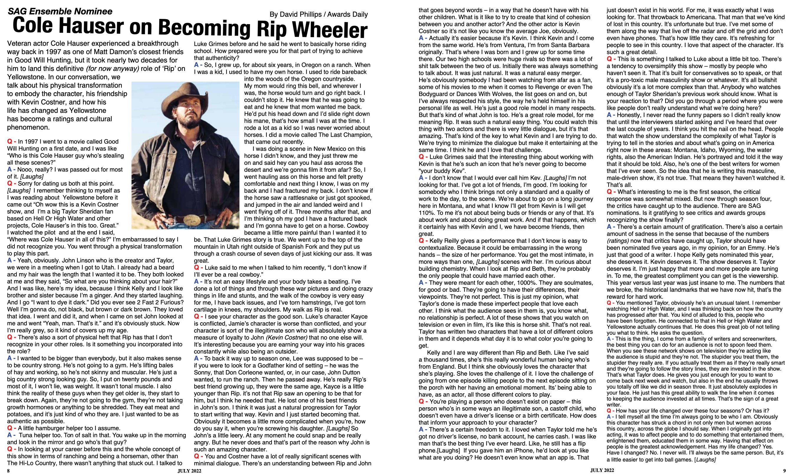

Scroll horizontally to read · Tap image or use Full Screen for best view
Interview by David Phillips / Awards Daily · Reprinted in Bridle & Bit Magazine · July 2022
Nooo, really? I was passed out for most of it. [Laughs] I remember thinking to myself as I was reading about Yellowstone before it came out, "Oh wow this is a Kevin Costner show, and I'm a big Taylor Sheridan fan based on Hell Or High Water and other projects, Cole Hauser's in this too. Great." I watched the pilot and at the end I said, "Where was Cole Hauser in all of this?" I'm embarrassed to say I did not recognize you. You went through a physical transformation to play this part.
I wanted to be bigger than everybody, but it also makes sense to be country strong. He's not going to a gym. He's lifting bales of hay and working, so he's not skinny and muscular. He's just a big country strong looking guy. So, I put on twenty pounds and most of it, I won't lie, was weight. It wasn't tonal muscle. I also think the reality of these guys when they get older is, they start to break down. Again, they're not going to the gym, they're not taking growth hormones or anything to be shredded. They eat meat and potatoes, and it's just kind of who they are. I just wanted to be as authentic as possible.
So, I grew up, for about six years, in Oregon on a ranch. When I was a kid, I used to have my own horse. I used to ride bareback into the woods of the Oregon countryside. My mom would ring this bell, and wherever I was, the horse would turn and go right back. I couldn't stop it. He knew that he was going to eat and he knew that mom wanted me back. He'd put his head down and I'd slide right down his mane, that's how small I was at the time. I rode a lot as a kid so I was never worried about horses. I did a movie called The Last Champion, that came out recently.
I was doing a scene in New Mexico on this horse I didn't know, and they just threw me on and said hey can you haul ass across the desert and we're gonna film it from afar? So, I went hauling ass on this horse and felt pretty comfortable and next thing I know, I was on my back and I had fractured my back. I don't know if the horse saw a rattlesnake or just got spooked, and jumped in the air and landed weird and I went flying off of it. Three months after that, and I'm thinking oh my god I have a fractured back and I'm gonna have to get on a horse. Cowboy became a little more painful than I wanted it to be.
I don't know that I would ever call him Kev. [Laughs] I'm not looking for that. I've got a lot of friends, I'm good. I'm looking for somebody who I think brings not only a standard and a quality of work to the day, to the scene. We're about to go on a long journey here in Montana, and what I know I'll get from Kevin is I will get 110%. To me it's not about being buds or friends or any of that. It's about work and about doing great work. And if that happens, which it certainly has with Kevin and I, we have become friends, then great.
Actually it's easier because it's Kevin. I think Kevin and I come from the same world. He's from Ventura, I'm from Santa Barbara originally. That's where I was born and I grew up for some time there. Our two high schools were huge rivals so there was a lot of shit talk between the two of us. He's obviously somebody I had been watching from afar as a fan. I've always respected his style, the way he's held himself in his personal life as well. He's just a good role model in many respects.
They were meant for each other, 1000%. They are soulmates, for good or bad. They're going to have their differences, their viewpoints. They're not perfect. This is just my opinion, what Taylor's done is made these imperfect people that love each other. I think what the audience sees in them is, you know what, no relationship is perfect. A lot of these shows that you watch on television or even in film, it's like this is horse shit. That's not real. Taylor has written two characters that have a lot of different colors to them and it depends what day it is to what color you're going to get.
This is the quality of writers and screenwriters, the best thing you can do for an audience is not to spoon feed them. When you see these network shows on television they're acting like the audience is stupid and they're not. The stupider you treat them, the stupider they really are. If you actually treat them as if they're really smart and they're going to follow the story lines, they are invested in the show. That's what Taylor does. He gives you just enough for you to want to come back next week and watch, but also in the end he usually throws you totally off like we did in season three. It just absolutely explodes in your face. He just has this great ability to walk the line when it comes to keeping the audience invested at all times. That's the sign of a great writer.
I tell myself all the time I'm always going to be who I am. Obviously this character has struck a chord in not only men but women across this country, across the globe I should say. When I originally got into acting, it was to affect people and to do something that entertained them, enlightened them, educated them in some way. Having that effect on people is the greatest acknowledgement. Has my life changed? Yes. Have I changed? No. I never will. I'll always be the same person. But, it's a little easier to get into ball games. [Laughs]